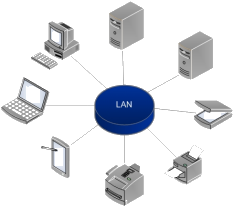

Les Types des Réseaux
un réseau informatique est un ensemble d'équipement informatiques (un ordinateur et périphériques) reliés entre eux grâce à des supports de communication (cable :réseau câblé, ou onde :réseau sans fil..) permettant la communication (transfert des informations électroniques) et le partage de ressources( matérielles et logicielles).
Différent types de réseaux :
- Les Réseaux LAN
- Les Réseaux MAN
- Les Réseaux WAN

Les Réseaux LAN

LAN signifie Local Area Network (en français Réseau Local).
Il s'agit d'un ensemble d'ordinateurs appartenant à une même organisation et reliés entre eux dans une petite aire géographique par un réseau, souvent à l'aide d'une même technologie (la plus répandue étant Ethernet)
Un réseau local est donc un réseau sous sa forme la plus simple.
La vitesse de transfert de données? d'un réseau local peut s'échelonner entre 10 Mbps (pour un réseau ethernet par exemple) et 1 Gbps (en FDDI ou Gigabit Ethernet par exemple).
La tailleLa taille d'un réseau local peut atteindre jusqu'à 100 voire 1000 utilisateurs.
Il est possible de distinguer deux modes de fonctionnement :
- Dans un environnement d'"égal à égal" (en anglais peer to peer), dans lequel il n'y a pas d'ordinateur central et chaque ordinateur a un rôle similaire.
- dans un environnement "client/serveur", dans lequel un ordinateur central fournit des services réseau aux utilisateurs.
Les Réseaux MAN

MAN signifie Metropolitan Area Network (en français réseau métropolitaine).
interconnectent plusieurs LAN géographiquement proches (au maximum quelques dizaines de km) à des débits importants. Ainsi un MAN permet à deux noeuds distants de communiquer comme si ils faisaient partie d'un même réseau local.
Un MAN est formé de commutateurs ou de routeurs interconnectés par des liens hauts débits (en général en fibre optique).
Les Réseaux WAN

WAN (Wide Area Network ou réseau étendu).
interconnecte plusieurs LANs à travers de grandes distances géographiques.
Les débits disponibles sur un WAN résultent d'un arbitrage avec le coût des liaisons (qui augmente avec la distance) et peuvent être faibles.
Les WAN fonctionnent grâce à des routeurs qui permettent de "choisir" le trajet le plus approprié pour atteindre un noeud du réseau.
Le plus connu des WAN est Internet .
Autres Réseaux
| Nom de Réseaux | Description |
|---|---|
| Un réseau personnel (PAN : Personnal Area Network) | interconnecte (souvent par des liaisons sans fil) des équipements personnels comme un ordinateur portable, un agenda électronique... |
| Un réseau de stockage (SAN : Storage Area Network) | est un réseau à haute performance dédié qui permet de transférer des données entre des serveurs et des ressources de stockage. Du fait qu’il s’agit d’un réseau dédié distinct, il évite tout conflit de trafic entre les clients et les serveurs et permet de bénéficier d’une connectivité haut débit. |
| Un réseau privé virtuel (VPN : Virtual Private Network) | est un réseau privé construit au sein d’une infrastructure de réseau publique telle que le réseau mondial Internet. Au moyen d’un réseau privé virtuel, un télétravailleur peut accéder à distance au réseau du quartier général de sa société. |